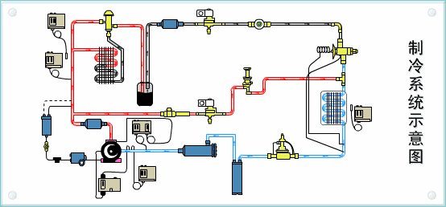

日常使用👆👆👆↑↑↑
工作原理👇👇👇↓↓↓

第一节：精讲
1.函数的概念及作用
函数是由事件驱动的或者当他被调用时执行的可重复使用的代码块。
－－－－空调是由遥控器控制或者当开关打开时，可运行的家用电器（工具）
具备一点功能的代码段，代码段来实现具体的功能。要想实现一个函数的功能需要对函数进行调用。每写完一个函数就需要在使用时进行调用
2.函数的好处
重复使用－－－－空调不可能是一次性的，可以重复使用
忽略细节－－－－会用空调不一定会生产空调
选择执行－－－－夏冬使用，春秋不用
3.函数的定义
通过关键字function声明，
function fn(){}
其中：
function－－－为声明函数的关键字，指出这是一个函数
fn －－－－－－是函数的名称，类似于永来存储函数的变量
() －－－－－－为函数的参数，多个参数用 , 隔开
{} －－－－－－放置函数体，用于执行时，所要编译的代码段
4.函数的调用
fn(); －－－－函数名＋()
注意：千万不能丢掉括号；可先尝试理解fn()()()()
5.事件的概念种类和作用
是一种可以被js侦测到的行为－－－－－－－－按下遥控器上的开关，空调打开
在JS中常见的事件有：
鼠标点击－－－－－－－－onclick
鼠标双击－－－－－－－－ondblclick
页面或图片加载－－－－－onload
鼠标移入－－－－－－－－onmouseover
鼠标离开－－－－－－－－onmouseout
元素获得焦点－－－－－－onfocus
元素失去焦点－－－－－－onblur
键盘事件
……
主要用于和用户产生一定的交互，提高页面或程序的交互性。
事件和函数之间的关系
当触发事件的时候，执行函数－－－－－－－按下制冷按钮，空调吹冷风
事件－－－－调用－－－－函数
6.函数、循环、事件结合打印九九乘法表
当用户单击按钮时，执行九九乘法表
7.参数的声明和传递
函数的参数分为：形参和实参；
function fn(a){ //a为形参
console.log(a); //打印出123
}
fn(123); //123为实参
写在函数体内的参数称为形参，相当于该函数的某个变量，只不过不用var声明；需要遵循变量的命名方式。
调用时传递的参数为实参，相当于给变量赋值，可以传递六大数据类型－－字符串，数值，函数，对象，布尔，NaN，Undefined
参数的传递过程：

第二节：应用
1.编写一个函数，计算两个数字的和／差／积／商
要求：使用传参的方式
2.编写一个函数，计算三个数字的大小，按从小到大顺序输出
第三节：精讲
1.函数的两种创建方式：声明式和赋值式
通过关键字function声明：
function fn(){}
通过变量赋值（未命名函数）：
var fn = function(){};
这种方式下，虽然这个函数没有名字，但是这个函数赋值给了fn，因此通过变量fn也能调用到这个函数
以上两种声明方式等价
都可以使用 函数名/变量名＋() 调用执行
2.形参和实参
形参和实参都可以有多个，用逗号隔开，多个形参和实参之间必须相互一一对应
function fn(a,b,c){ //a = 1, b = 2, c = 3
console.log(a+b+c); //6
}
fn(1,2,3);
如果形参和实参不一致：
形参的数量比实参的数量多，多出来的形参，为undefined；
形参的数量比实参的数量少，多出来的实参，传递到arguments对象中；
形参的数量与实参的数量相等，一一对应。
3.return关键字
alert(parseInt(123.456)); //弹出123
function fn(a,b,c){
console.log(a+b+c);
}
alert(fn(1,2,3)); //弹出undefined
因为fn()函数没有返回值，只要没有返回值的函数，都返回一个undefined
可通过关键字return返回函数的值。
return的作用：1.返回值；2.中止程序
function fn(a,b,c){
console.log(a+b+c);
return a+b+c;
}
alert(fn(1,2,3)); //弹出6
什么是返回值？
将函数处理后的数据，返回到函数名上，便于其他程序或用户调用或做二次使用
如果有return，此时fn(1,2,3)==return的返回值
如果没有return，此时fn(1,2,3)==undefined
return中止程序之后，return下面的代码不会执行
不一定所有函数都要有返回值，只有需要返回数据的函数才加return
return可以返回任何值，包含函数，当返回函数时，如果需要执行返回的函数，可将返回值当成一个函数名，加上一个()即可执行；
如fn()()();
4.arguments对象
如果形参和实参不一致：
形参的数量比实参的数量多，多出来的形参，为undefined；
形参的数量比实参的数量少，多出来的实参，传递到arguments对象中；
形参的数量与实参的数量相等，一一对应。
在函数中，形参和实参的个数，可以为任意个，甚至数量不对应，程序都不会报错，但是在计算过程中可能会出现NaN，如：
function fn(a,b,c){
return a+b+c;
}
alert(fn(1,2)); //弹出NaN
这是因为在JS中，参数在函数内部是以一个数组表示的，函数接受的永远是一个数组。
我们可以通过arguments对象来访问这个参数数组，从而获取传递给函数的每个参数。
在arguments身上有许多属性，如
arguments.length为数组的长度－－－－当前传进来几个参数
arguments.callee()－－－－－－－－－为当前所在的函数本身，递归
第四节：应用
1.编写任意个数字的求和／积的函数
2.编写生成4个数字验证码的函数，(并生成10次，同时将结果存入数组)
Math.random()
第五节：综合应用
1.编写一个函数，计算任意两个数字之间所能组成的奇数个数，数字必须是个位数
比如： 计算0-3之间能组成的奇数个是01、21、03、13、23、31
2.某个公司采用公用电话传递数据，数据是四位的整数，在传递过程中是加密的，加密规则如下：每位数字都加上5,然后用除以10的余数代替该数字，再将第一位和第四位交换，第二位和第三位交换，请编写一个函数，传入原文，输出密文
3 7 1 6
8 12 6 11
8 2 6 1
1 6 2 8
一瓶酱油
一瓶醋
找一个空瓶